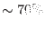
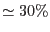

epevents flags all events with a gain corrected amplitude smaller than a parameterized value which follow in the same CCD column immediately after an event with an amplitude above a certain (fixed) threshold as `trailing' events. Such artificial events are produced by re-emission during the readout process ([1]). The flags are bit-masked according to [3]. The flagging is suppressed for TIMING mode data. In this mode the reemission effect is very unlikely as events are binned into macro pixels.
A pattern analysis is made which yields four distinctive parameters: the number of pixels in the structure, the running pattern number within a frame, the pattern orientation (zero for singles and unresolved patterns; otherwise a three digit code, with the last digit specifying the orientation of the pattern and the first two the position of the pixel on the pattern) and the distance (in pixels) to neighbouring event in the same frame and column along the readout direction towards the CAMEX (0 indicates the first pixel read in a column). All four parameters are combined into three output columns PAT_ID, PAT_SEQ, and PATTERN which will be part of the EPIC pn calibrated event list as a PPS product ([2]). Bad pixels from the BADPIX extension are not included in the pattern analysis.
Events are flagged as on a bad pixel if they coincide with a bad pixel in the BADPIX extension. Single events (or patterns, based on their pixel with maximum amplitude) next to a hot or bad pixel are flagged accordingly.
Detection of cosmic ray events (MIPs) is based on the high energy cutoff. Depending on the MIP rejection mode (on-board, in epframes) information from the discarded line information in the EXPOSURE extension is used for event flagging.
Making use of calibration products in the CCF and CAL routines, epevents corrects raw energies (PHA) for gain variations of the preamplifier channels and CTI during readout to compute the PI values. The CTI correction is calculated as a function of column position, (temperature, if requested), PHA of the events as well as distance and PHA of the preceding event along the readout direction. Hence, the calibration procedure requires information on events read out from the same node prior to the event in question (memory-effect).
epevents recombines all the events split across several pixels with the same pattern index: the energy of the recombined event is the sum over the split energies, its position is that of the split event with maximum raw energy. There are  single events and  double patterns (other valid events are triples and quadruples), the exact numbers vary with energy. epatplot is a tool to visualize the pattern type distributions as function of (recombined) photon energy.
Finally, epevents computes physical camera detector coordinates DETX, DETY (in the CAMCOORD2 system) from raw detector coordinates RAWX, RAWY which may be randomized over the pixel area depending on the parameter randomizeposition.
For readout modes TIMING and BURST the source position attribute SRCPOS written by epframes is used to create a DETY coordinate corresponding to the source position on the CCD. SRCPOS is also used as position for the CTI correction.